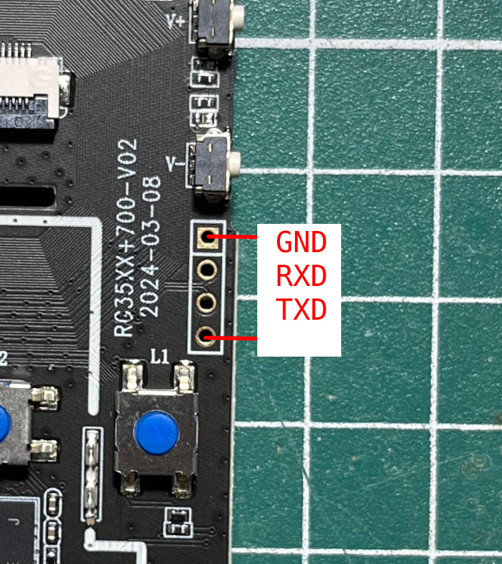
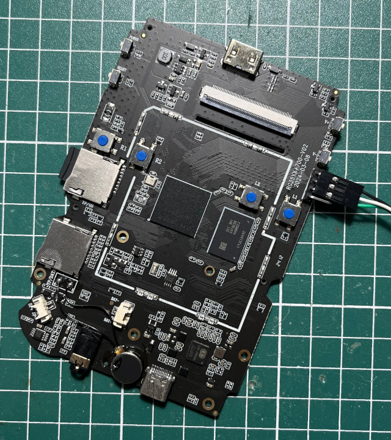

UART


[50]HELLO! BOOT0 is starting!
[53]BOOT0 commit : 749c1f9a-dirty
[57]set pll start
[59]periph0 has been enabled
[62]set pll end
[64][pmu]: bus read error
[66][pmu]: bus read error
[69]PMU: AXP2202
[77]vaild para:8 select dram para0
[81]board init ok
[82]DRAM BOOT DRIVE INFO: V0.651
[86]the chip id is 0x6c00
[88]chip id check OK
[91]DRAM_VCC set to 1100 mv
[93][DST] Dram DST Loop1
[118]read_calibration error
[132]read_calibration error
[146]read_calibration error
[160]read_calibration error
[174]read_calibration error
[187]read_calibration error
[201]read_calibration error
[215]read_calibration error
[229]read_calibration error
[243]read_calibration error
[246]retraining final error
[262][AUTO DEBUG]32bit,1 ranks training success!
[423][DST] Lclk,0x00008888,Memtest Pass
[427][DST] Clk =672 MHz
[429][DST] R_2d
[1609][DST] R_2d_hv_D2:0x18-0x60,0x49(314mV),0
[1614][DST] R_2d_hv_D2:0x34~0x4c,0x40
[1617][DST] R_2d tpr6 = 0x40808080
[1628][DST] R_1st
[1643][DST] DB0 R_1st:3,0~24,25,0x06
[1660][DST] DB1 R_1st:3,0~26,27,0x07
[1678][DST] DB2 R_1st:3,0~26,27,0x07
[1695][DST] DB3 R_1st:3,0~25,26,0x06
[1699][DST] R_1st Tpr12 = 0x06070706
[1702][DST] W_2st
[1756][DST] DB0 W_2st:0,24~48,25,0x24
[1814][DST] DB1 W_2st:0,26~52,27,0x27
[1875][DST] DB2 W_2st:0,25~53,29,0x27
[1937][DST] DB3 W_2st:0,22~48,27,0x23
[1941][DST] W_2st Tpr11 = 0x23272724
[1944][DST] R_2st
[1976][DST] DB0 R_2st:3,0~23,24,0x05
[2014][DST] DB1 R_2st:3,2~24,23,0x07
[2055][DST] DB2 R_2st:3,1~24,24,0x06
[2089][DST] DB3 R_2st:3,0~24,25,0x06
[2092][DST] R_2st Tpr12 = 0x06060705
[2257][DST] RV_C, VW:0x3a-0x46, DW:120ps
[2354][DST] Dram DST Success
[2357]DRAM CLK =672 MHZ
[2359]DRAM Type =8 (3:DDR3,4:DDR4,7:LPDDR3,8:LPDDR4)
[2371]Actual DRAM SIZE =1024 M
[2374]DRAM SIZE =1024 MBytes, para1 = 30fa, para2 = 4000000, dram_tpr13 = 2006c61
[2388]DRAM simple test OK.
[2390]rtc standby flag is 0x0, super standby flag is 0x0
[2396]dram size =1024
[2399]card no is 0
[2401]sdcard 0 line count 4
[2404][mmc]: mmc driver ver 2021-10-12 13:56
[2408][mmc]: b mmc 0 bias 0
[2416][mmc]: Wrong media type 0x0
[2419][mmc]: ***Try SD card 0***
[2429][mmc]: HSSDR52/SDR25 4 bit
[2432][mmc]: 50000000 Hz
[2435][mmc]: 59638 MB
[2437][mmc]: ***SD/MMC 0 init OK!!!***
[2549]Loading boot-pkg Succeed(index=0).
[2553][mmc]: b mmc 0 bias 0
[2556]Entry_name = u-boot
[2566]Entry_name = monitor
[2570]Entry_name = dtbo
[2573]Entry_name = dtb
[2577]Jump to second Boot.
NOTICE: BL3-1: v1.0(debug):335ab35
NOTICE: BL3-1: Built : 14:03:48, 2023-12-07
NOTICE: BL3-1 commit: 8
NOTICE: cpuidle init version V2.0
ERROR: Error initializing runtime service tspd_fast
NOTICE: BL3-1: Preparing for EL3 exit to normal world
NOTICE: BL3-1: Next image address = 0x4a000000
NOTICE: BL3-1: Next image spsr = 0x1d3
U-Boot 2018.05 (Mar 15 2024 - 15:18:32 +0800) Allwinner Technology
[02.662]CPU: Allwinner Family
[02.665]Model: sun50iw9
I2C: ready
[02.669]DRAM: 1 GiB
[02.672]Relocation Offset is: 35eba000
[02.721]secure enable bit: 0
[02.723]pmu_axp152_probe pmic_bus_read fail
[02.727]pmu_axp1530_probe pmic_bus_read fail
[02.732]PMU: AXP2202
[04.936]battery probe reset :STATUS0:0x20
[04.940]BMU: AXP2202
[04.942][AXP2202] comm status : 0x0 = 0x20, 0x1 = 0x90
[04.947][AXP2202] onoff status: 0x20 = 0x4, 0x21 = 0x0
AXP2202_IIN_LIM:28
AXP2202_IIN_LIM:28
[04.957][axp][err]:
b12_mode: 0
AXP2202_IIN_LIM:28
FDT ERROR:fdt_get_regulator_name:get property handle twi-supply error:FDT_ERR_INTERNAL
[04.990]CPU=1008 MHz,PLL6=600 Mhz,AHB=200 Mhz, APB1=100Mhz MBus=400Mhz
[04.998]drv_disp_init
[05.032]__clk_enable: clk is null.
[05.038]drv_disp_init finish
[05.040]gic: sec monitor mode
[05.073]flash init start
[05.075]workmode = 0,storage type = 1
[05.079]MMC: 0
[05.080][mmc]: mmc driver ver uboot2018:2021-07-19 14:09:00
[05.086][mmc]: get sdc_type fail and use default host:tm1.
[05.097][mmc]: Using default timing para
[05.101][mmc]: SUNXI SDMMC Controller Version:0x40200
[05.118][mmc]: card_caps:0x3000000a
[05.121][mmc]: host_caps:0x3000003f
[05.125]sunxi flash init ok
[05.129]Loading Environment from SUNXI_FLASH... OK
[05.145]out of usb burn from boot: not need burn key
[05.150]boot_gui_init:start
partno erro : can't find partition Reserve0
[05.162]Get Reserve0 partition number fail!
tcon_de_attach:de=0,tcon=0===LCD_power_on:178
--allen--data0 = 192
[05.178]boot_gui_init:finish
[05.181]bmp_name=bootlogo.bmp
partno erro : can't find partition bootloader
===lcd_panel_uboot_fj035fhd05_v1_init:261 lcd_type = 0
921654 bytes read in 185 ms (4.8 MiB/s)
[05.388]Item0 (Map) magic is bad
[05.391]the secure storage item0 copy0 magic is bad
[05.396]Item0 (Map) magic is bad
[05.399]the secure storage item0 copy1 magic is bad
[05.403]Item0 (Map) magic is bad
[05.409]update dts
partno erro : can't find partition private
partno erro : can't find partition private
partno erro : can't find partition private
partno erro : can't find partition private
partno erro : can't find partition private
partno erro : can't find partition private
partno erro : can't find partition private
[05.480]update part info
start detect rtc domain...
rtc domain status: okay [0x90000000]
[05.494]update bootcmd
[05.496]No ethernet found.
Hit any key to stop autoboot: 0
===LCD_bl_open:197
[05.533]LCD open finish
Android's image name: sun50i_arm64
[06.449]Starting kernel ...
[06.451][mmc]: MMC Device 2 not found
[06.455][mmc]: mmc 2 not find, so not exit
[ 0.000000] Booting Linux on physical CPU 0x0
[ 0.000000] Linux version 4.9.170 (cc@cc-H81M-S1) (gcc version 5.3.1 20160412 (Linaro GCC 5.3-2016.05) ) #212 SMP PREEMPT Tue Mar 12 21:15:01 CST 2024
[ 0.000000] Boot CPU: AArch64 Processor [410fd034]
[ 0.000000] bootconsole [earlycon0] enabled
[ 0.000000] allen_boe_lcd=0, str=old
[ 0.081629] BOOTEVENT: 81.624332: ON
[ 0.573404] axp2101-regulator axp2101-regulator.0: Setting DCDC frequency for unsupported AXP variant
[ 0.573496] axp2101-regulator axp2101-regulator.0: Error setting dcdc frequency: -22
[ 0.957150] uart uart1: get regulator failed
[ 0.983498] [NAND][NE] Not found valid nand node on dts
[ 0.991636] sunxi-wlan soc@03000000:wlan: get gpio chip_en failed
[ 0.998510] sunxi-wlan soc@03000000:wlan: get gpio power_en failed
[ 1.096132] hci: request ohci0-controller gpio:272
[ 1.101886] hci: request ohci1-controller gpio:147
[ 1.331515] rtc-pcf8563 5-0051: low voltage detected, date/time is not reliable.
[ 1.342616] VE: get debugfs_mpp_root is NULL, please check mpp
[ 1.342616]
[ 1.350858] VE: sunxi ve debug register driver failed!
[ 1.350858]
[ 1.362881] axp2202_usb_power: axp2202-acin device is not configed, not use vbus-det
[ 1.362881]
[ 2.655544] mmc:failed to get gpios
[ 2.724749] sunxi-mmc sdc1: smc 2 p1 err, cmd 52, RTO !!
[ 2.731547] sunxi-mmc sdc1: smc 2 p1 err, cmd 52, RTO !!
[ 2.741882] sunxi-mmc sdc1: smc 2 p1 err, cmd 5, RTO !!
[ 2.748589] sunxi-mmc sdc1: smc 2 p1 err, cmd 5, RTO !!
[ 2.755299] sunxi-mmc sdc1: smc 2 p1 err, cmd 5, RTO !!
[ 2.762007] sunxi-mmc sdc1: smc 2 p1 err, cmd 5, RTO !!
[ 2.785754] ERROR: pinctrl_get for HDMI2.0 DDC fail
[ 2.808937] cpu cpu1: opp_list_debug_create_link: Failed to create link
[ 2.816633] cpu cpu1: _add_opp_dev: Failed to register opp debugfs (-12)
[ 2.824290] cpu cpu2: opp_list_debug_create_link: Failed to create link
[ 2.831731] cpu cpu2: _add_opp_dev: Failed to register opp debugfs (-12)
[ 2.839311] cpu cpu3: opp_list_debug_create_link: Failed to create link
[ 2.846782] cpu cpu3: _add_opp_dev: Failed to register opp debugfs (-12)
[ 2.858104] ---[allen] gpio_keys_polled_init: 754
[ 2.863603] ---[allen] gpio_keys_polled_probe: 565
[ 2.869987] ---[allen] gpio_keys_polled_probe: 694
[ 2.922113] rtc-pcf8563 5-0051: low voltage detected, date/time is not reliable.
[ 2.930431] rtc-pcf8563 5-0051: hctosys: unable to read the hardware clock
[ 2.939645] [sound 402][CODEC-HDMI sunxi_codec_dev_probe] register codec-hdmi success
[ 2.949390] [asoc_simple_probe, 432]
[ 2.955003] [asoc_simple_probe, 432]
[ 2.959623] [asoc_simple_probe, 432]
[ 2.963717] [asoc_simple_probe, 432]
[ 2.969119] [asoc_simple_probe, 432]
[/init]: getty is ttyS0
[/init]: RootDevice is "/dev/mmcblk0p5" , GPT_SUPPORT=1
[/init]: Try to load EMMC ...
e2fsck 1.42.12 (29-Aug-2014)
/dev/mmcblk0p5 has unsupported feature(s): metadata_csum
e2fsck: Get a newer version of e2fsck!
[ 3.478766] cgroup: cgroup2: unknown option "nsdelegate"
Welcome to Ubuntu 18.04.6 LTS!
[ OK ] Started Forward Password Requests to Wall Directory Watch.
[ OK ] Reached target Remote File Systems.
[ OK ] Created slice User and Session Slice.
[ OK ] Started Dispatch Password Requests to Console Directory Watch.
[ OK ] Reached target Local Encrypted Volumes.
[ OK ] Reached target Paths.
[ OK ] Created slice System Slice.
[ OK ] Listening on udev Kernel Socket.
[ OK ] Created slice system-serial\x2dgetty.slice.
[ OK ] Listening on Journal Socket (/dev/log).
[ OK ] Listening on Journal Socket.
Starting Create Static Device Nodes in /dev...
Mounting Kernel Debug File System...
Starting Set the console keyboard layout...
Starting Load Kernel Modules...
[ OK ] Listening on udev Control Socket.
[ 4.377442] [asoc_simple_probe, 432]
Starting udev Coldplug all Devices...
[ OK ] Listening on /dev/initctl Compatibility Named Pipe.
[ OK ] Reached target Swap.
Starting Remount Root and Kernel File Systems...
[ OK ] Listening on Journal Audit Socket.
Starting Journal Service...
[ OK ] Reached target Slices.
[ OK ] Started Create Static Device Nodes in /dev.
[ OK ] Mounted Kernel Debug File System.
[ OK ] Started Journal Service.
[ OK ] Started Set the console keyboard layout.
[ OK ] Started Load Kernel Modules.
[ OK ] Started Remount Root and Kernel File Systems.
Starting Load/Save Random Seed...
Mounting FUSE Control File System...
Starting Apply Kernel Variables...
Mounting Kernel Configuration File System...
Starting Flush Journal to Persistent Storage...
[ OK ] Reached target Local File Systems (Pre).
Mounting /tmp...
Starting udev Kernel Device Manager...
[ OK ] Started udev Coldplug all Devices.
[ OK ] Started Load/Save Random Seed.
[ OK ] Started udev Kernel Device Manager.
[ OK ] Mounted FUSE Control File System.
[ OK ] Started Apply Kernel Variables.
[ OK ] Mounted Kernel Configuration File System.
[ OK ] Mounted /tmp.
[ OK ] Reached target Local File Systems.
Starting Set console font and keymap...
Starting Raise network interfaces...
[ OK ] Started Set console font and keymap.
[ OK ] Started Flush Journal to Persistent Storage.
Starting Create Volatile Files and Directories...
[ OK ] Started Raise network interfaces.
[FAILED] Failed to start Create Volatile Files and Directories.
See 'systemctl status systemd-tmpfiles-setup.service' for details.
[ OK ] Found device /dev/ttyS0.
[ OK ] Reached target Sound Card.
Starting Network Name Resolution...
Starting Update UTMP about System Boot/Shutdown...
[ OK ] Started Update UTMP about System Boot/Shutdown.
[ OK ] Listening on Load/Save RF Kill Switch Status /dev/rfkill Watch.
[ OK ] Reached target System Initialization.
[ OK ] Started Discard unused blocks once a week.
[ OK ] Started Daily Cleanup of Temporary Directories.
[ OK ] Started Message of the Day.
[ OK ] Started Daily apt download activities.
[ OK ] Started Daily apt upgrade and clean activities.
[ OK ] Reached target Timers.
[ OK ] Listening on D-Bus System Message Bus Socket.
[ OK ] Reached target Sockets.
[ OK ] Reached target Basic System.
Starting Dispatcher daemon for systemd-networkd...
Starting Restore /etc/resolv.conf i…fore the ppp link was shut down...
[ OK ] Started Set the CPU Frequency Scaling governor.
Starting Modem Manager...
[ OK ] Started Regular background program processing daemon.
Starting Save/Restore Sound Card State...
Starting launcher.service...
Starting Login Service...
[ OK ] Started D-Bus System Message Bus.
[ OK ] Started Login Service.
Starting Network Manager...
Starting WPA supplicant...
[ OK ] Started Network Name Resolution.
[ OK ] Started Restore /etc/resolv.conf if…before the ppp link was shut down.
[ OK ] Started launcher.service.
[ OK ] Started Save/Restore Sound Card State.
[ OK ] Started WPA supplicant.
Starting Authorization Manager...
Starting Load/Save RF Kill Switch Status...
[ OK ] Reached target Host and Network Name Lookups.
[ OK ] Started Load/Save RF Kill Switch Status.
[ OK ] Started Authorization Manager.
[ OK ] Stopped Network Manager.
Starting Network Manager...
[ OK ] Started Modem Manager.
[ OK ] Started Dispatcher daemon for systemd-networkd.
Starting Hostname Service...
[ OK ] Started Hostname Service.
[ OK ] Started Network Manager.
Starting Network Manager Script Dispatcher Service...
[ OK ] Reached target Network.
[ OK ] Started Unattended Upgrades Shutdown.
Starting Permit User Sessions...
Starting /etc/rc.local Compatibility...
[ OK ] Started Permit User Sessions.
[ OK ] Started Network Manager Script Dispatcher Service.
Starting Set console scheme...
[ OK ] Started Set console scheme.
[ OK ] Created slice system-getty.slice.
[ 9.054857] sunxi-mmc sdc1: smc 2 p1 err, cmd 52, RTO !!
[ 9.061691] sunxi-mmc sdc1: smc 2 p1 err, cmd 52, RTO !!
[ 9.072090] sunxi-mmc sdc1: smc 2 p1 err, cmd 5, RTO !!
[ 9.078738] sunxi-mmc sdc1: smc 2 p1 err, cmd 5, RTO !!
[ 9.085443] sunxi-mmc sdc1: smc 2 p1 err, cmd 5, RTO !!
[ 9.092096] sunxi-mmc sdc1: smc 2 p1 err, cmd 5, RTO !!
Starting Bluetooth service...
[ 9.798044] [asoc_simple_probe, 432]
[ OK ] Started /etc/rc.local Compatibility.
[ OK ] Started Bluetooth service.
[ OK ] Started Serial Getty on ttyS0.
[ OK ] Started Getty on tty1.
[ OK ] Reached target Login Prompts.
[ OK ] Reached target Multi-User System.
[ OK ] Reached target Graphical Interface.
Starting Update UTMP about System Runlevel Changes...
[ OK ] Started Update UTMP about System Runlevel Changes.
Ubuntu 18.04.6 LTS deeplay ttyS0
deeplay login: root
密码：
上一次登录： 二 4月 25 03:31:04 UTC 2023 ttyS0 上
Welcome to Ubuntu 18.04.6 LTS (GNU/Linux 4.9.170 aarch64)
The programs included with the Ubuntu system are free software;
the exact distribution terms for each program are described in the
individual files in /usr/share/doc/*/copyright.
Ubuntu comes with ABSOLUTELY NO WARRANTY, to the extent permitted by
applicable law.
root@deeplay:/#